Déploiement de DeepSeek sur OpenShift
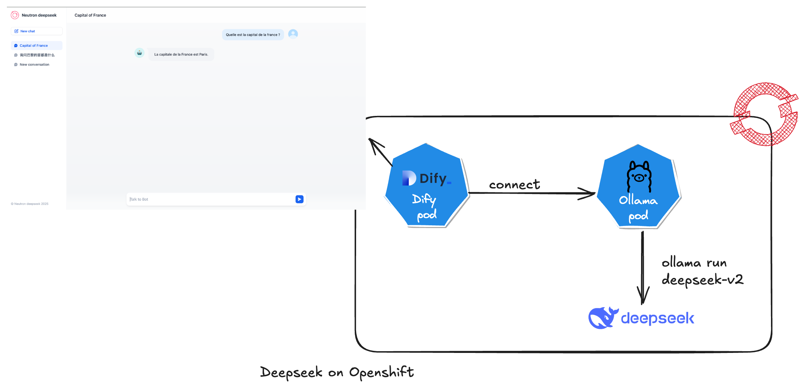
Prérequis
Avant de commencer, assurez-vous de remplir les conditions suivantes :
- Être en mesure de se connecter à un cluster OpenShift.
- Pouvoir créer un namespace sur OpenShift.
- Avoir les privilèges administrateur sur ce namespace.
- Cloner le dépôt suivant pour disposer des fichiers nécessaires :
git clone https://github.com/neutron-IT-organization/deepseek-openshift.git
1. Créer un Namespace deepseek
Pour commencer, créez un namespace dédié à DeepSeek sur OpenShift :
oc create namespace deepseek
2. COnfigurez les SCC
Attribuez la SCC (Security Context Constraint) privileged au service account ci-dessous dans le namespace deepseek :
oc adm policy add-scc-to-user privileged -z default -n deepseek
oc adm policy add-scc-to-user privileged -z dify-redis -n deepseek
oc adm policy add-scc-to-user privileged -z dify-postgres -n deepseek
oc adm policy add-scc-to-user privileged -z dify-weaviate -n deepseek
3. Installer le déploiement d'Ollama
Déployez le manifest manifest/ollama.yaml dans le namespace deepseek avec le fichier de configuration suivant :
apiVersion: apps/v1
kind: Deployment
metadata:
name: ollama
namespace: deepseek
spec:
replicas: 1
selector:
matchLabels:
app: ollama
template:
metadata:
labels:
app: ollama
spec:
securityContext:
runAsUser: 0
containers:
- name: ollama
image: ollama/ollama:latest
ports:
- containerPort: 11434
protocol: TCP
resources: {}
restartPolicy: Always
terminationGracePeriodSeconds: 30
dnsPolicy: ClusterFirst
Appliquez cette configuration avec la commande suivante :
oc apply -f manifest/ollama.yaml
4. Exécuter deepseek-v2 dans ollama
Accédez à l'onglet Workloads > Pods.
Recherchez le pod ollama dans le namespace deepseek.
Cliquez dessus, puis allez dans l'onglet Terminal.
Exécutez la commande suivante directement dans le terminal du pod :
Une fois le déploiement d'Ollama effectué, exécutez la commande suivante à l'intérieur du pod pour lancer deepseek-v2 :
ollama run deepseek-v2
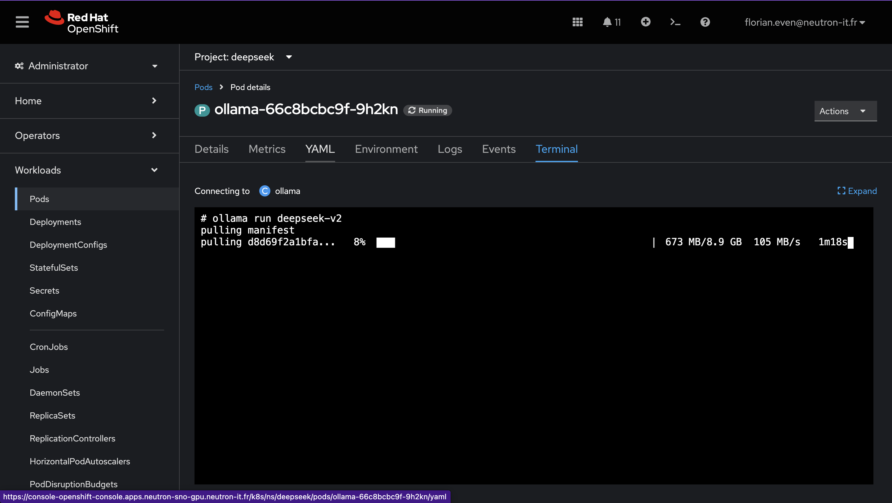
Alternative en ligne de commande
oc exec -it <pod-name> -- ollama run deepseek-v2
Remplacez <pod-name> par le nom du pod Ollama que vous pouvez obtenir avec la commande oc get pods.
5. Installer Dify dans le namespace deepseek
Ajoutez le repo Helm de Dify et installez-le dans le namespace deepseek :
oc apply -f manifest/dify.yaml
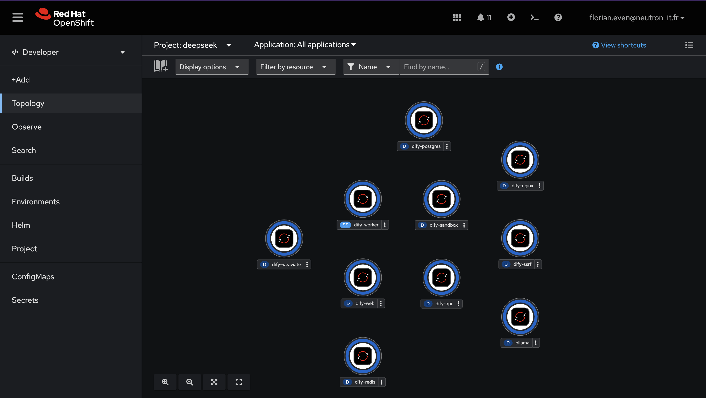
6. Exposer Dify avec une Route
Enfin, exposez le service Dify via une route OpenShift pour rendre l'application accessible :
kind: Route
apiVersion: route.openshift.io/v1
metadata:
name: dify-route
namespace: deepseek
spec:
path: /
to:
kind: Service
name: dify-nginx
weight: 100
port:
targetPort: dify-nginx
tls:
termination: edge
wildcardPolicy: None
Appliquez cette route avec la commande suivante :
oc apply -f manifest/dify-route.yaml
Vous pouvez maintenant accéder a dify via la route. Pour la récupérer utilisez la commande ci dessous
oc get route dify-route -n deepseek -o jsonpath='{.spec.host}'
7. Configuration de dify
Lors de la premiere connextion a dify, le mot de passe administrateur vous sera demandé. Par défaut celui-ci prend la valeur password.
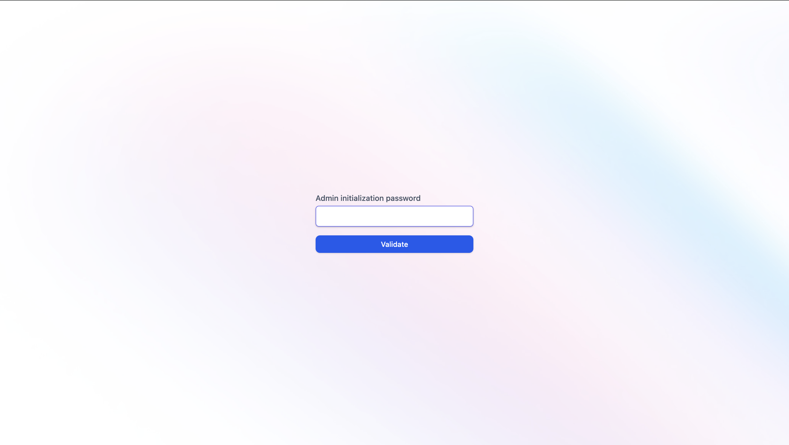
Complétez ensuite le formulaire Setting up an admin account avec un user/password.
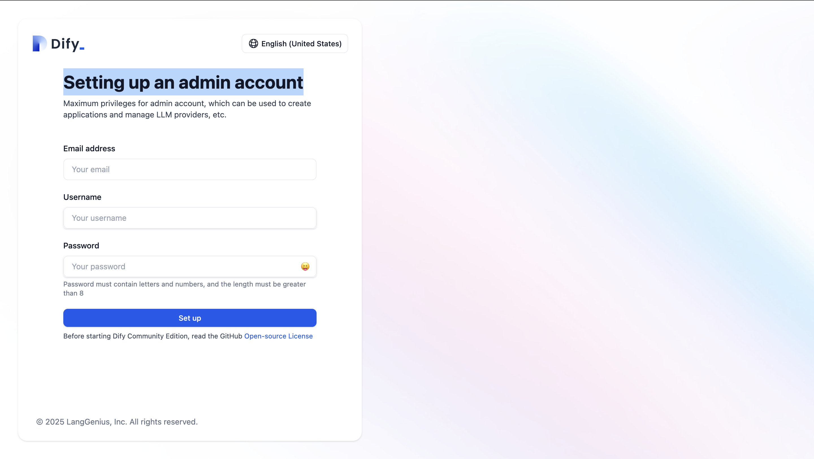
Vous devriez maintenant accéder a l'interface Dify.
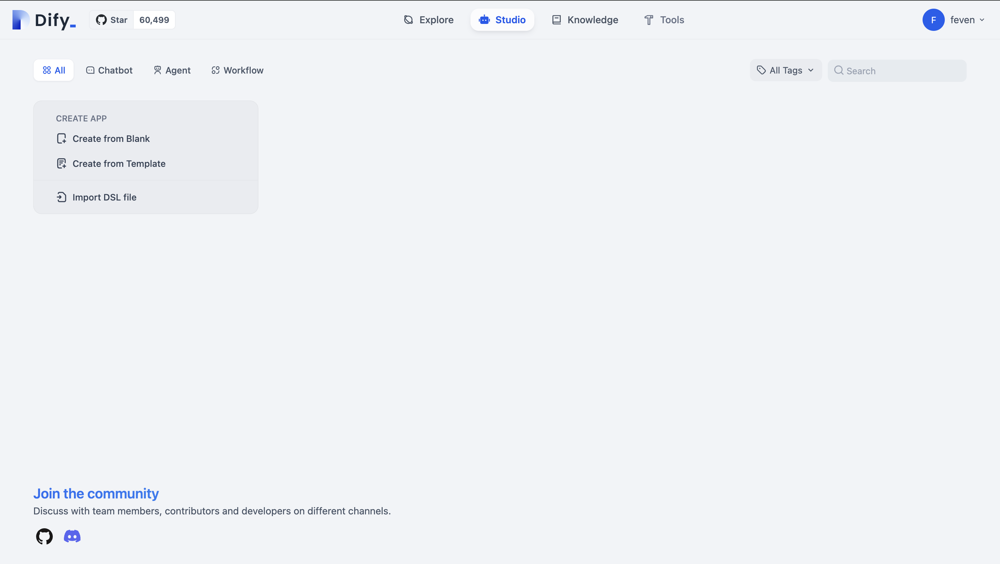
8. Create Deepseek chatbot
Dans un premier temps configurez le model deepseek. Pour cela cliquez sur votre nom en haut a droite puis sur Settings. Puis cliquez sur Model Provider.
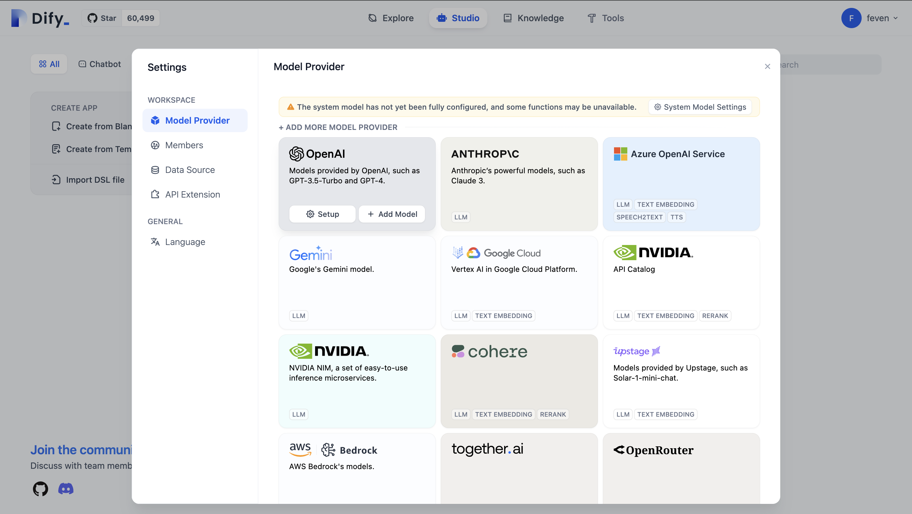
Selectionnez ensuite Ollama et cliquez sur + Add Model
Complétez le formulaire.
Dans Model Name, indiquez le nom de votre model. Ici deepseek-v2. Dans Base URL ecrivez le nom du service ollama http://ollama.deepseek.svc.cluster.local.
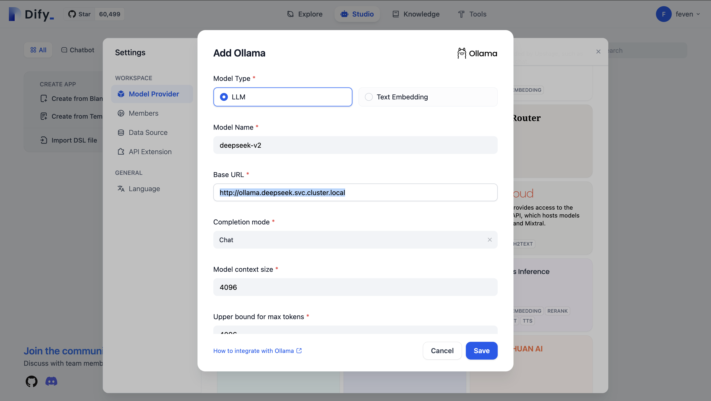
NOTE: Rechargez ensuite votre page pour que le model soit bien pris en compte. Pour cela vous pouvez cliquez sur F5.
Vous pouvez maintenant créer votre chatbot. Pour cela dans l'onglet Studio, cliquez sur Chatbot puis sur + Create from blank.
Donnez un nom a votre chatbot puis cliquez sur create.
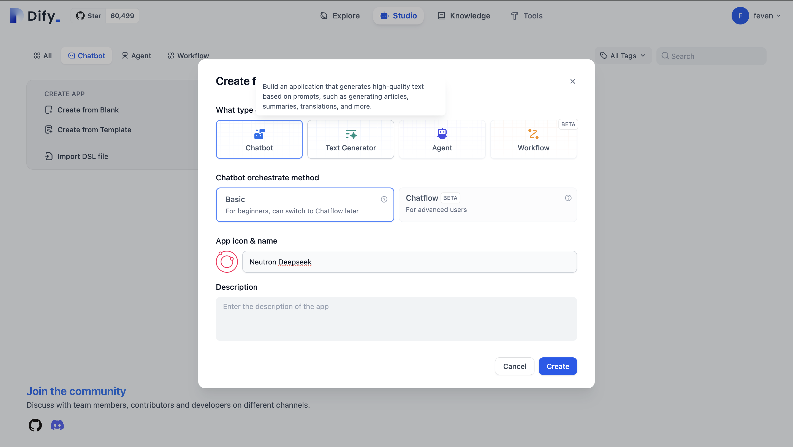
Votre chatbot est des a present fonctionnel vous pouvez le tester en discantant dans la section Talk to bot.
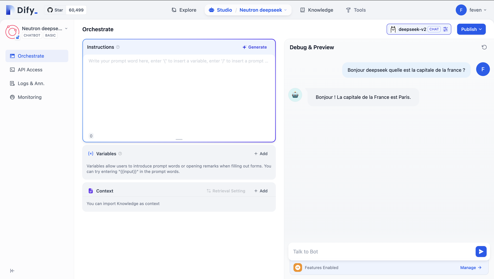
9. Publier Deepseek chatbot
Vous pouvez maintenant publier votre chatbot.
Pour cela cliquez sur Publish. Penser a update votre chatbot. Cliquez sur Run App.
NOTE: Selon la configuration de votre nginx, il est possible que l'url utilisé soit dify-api:5001. Si c'est le cas remplacer dans l'url dify-api:5001 par votre route pour accéder au chatbot.
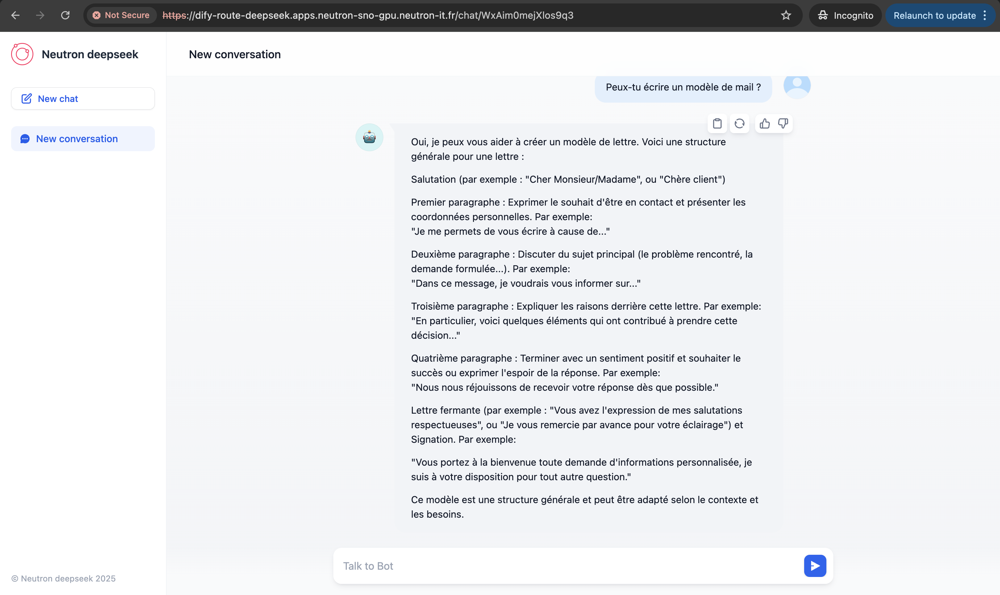
Conclusion
Vous avez maintenant déployé DeepSeek sur OpenShift. Vous pouvez accéder à l'application via la route exposée et utiliser les différents services qu'elle offre.